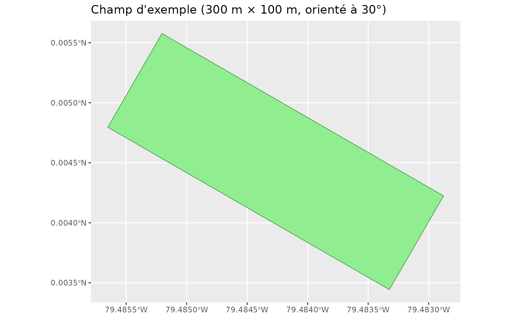
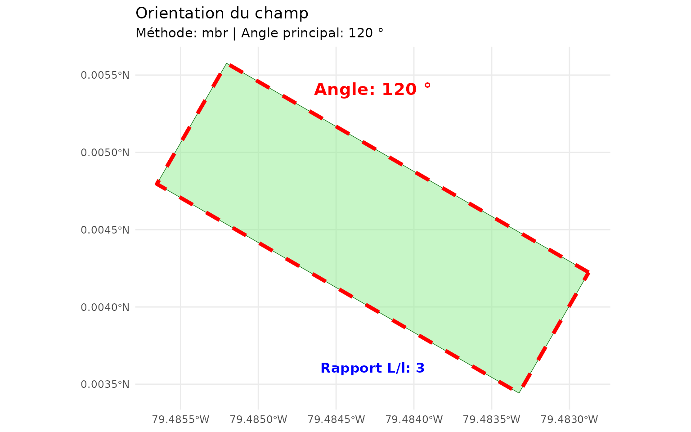
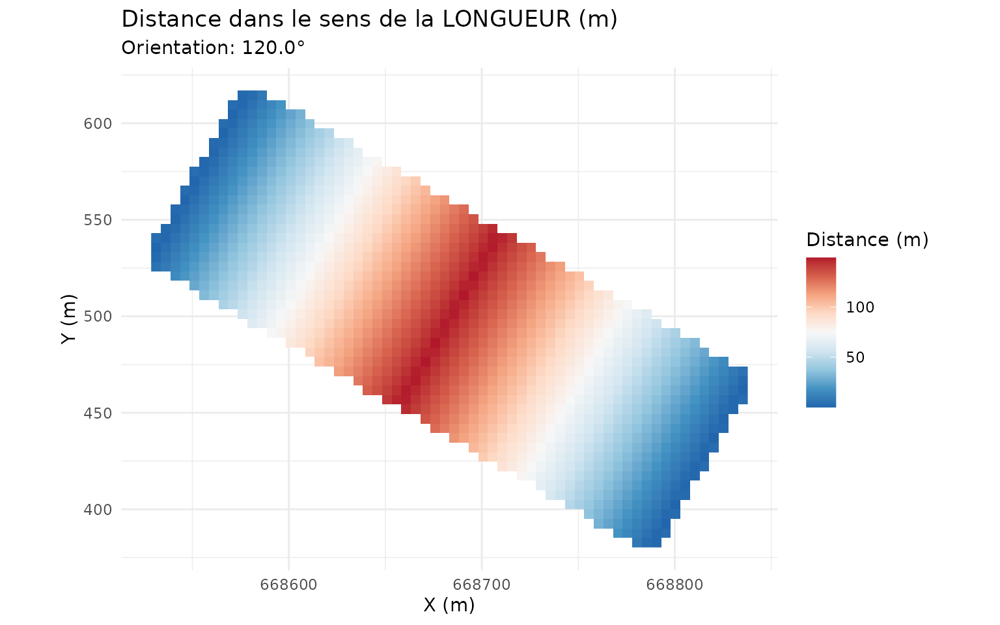
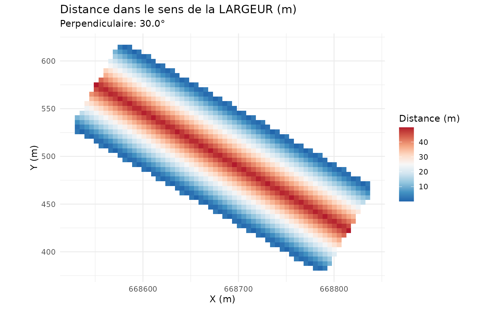
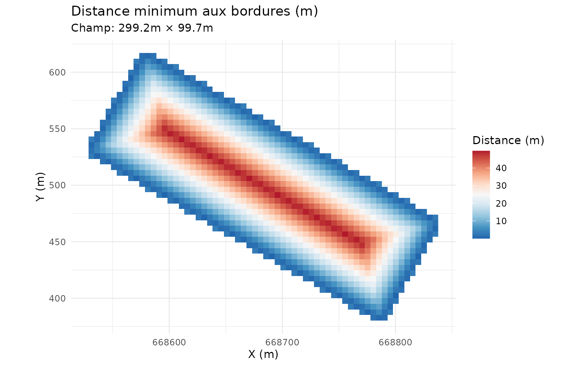
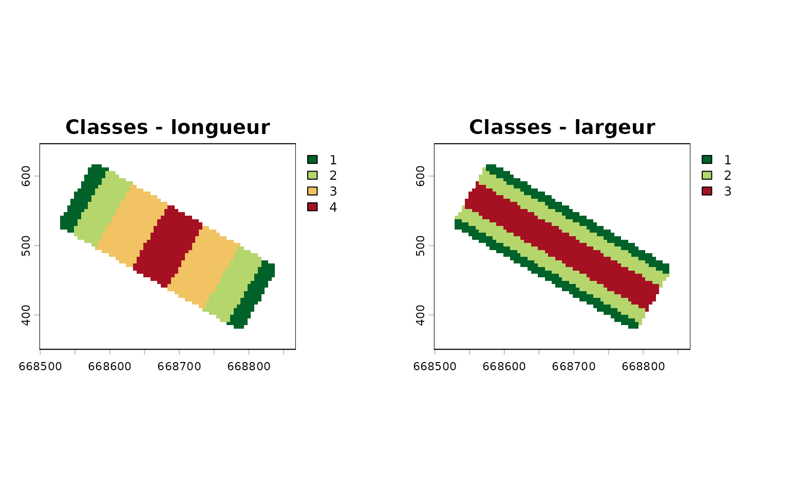
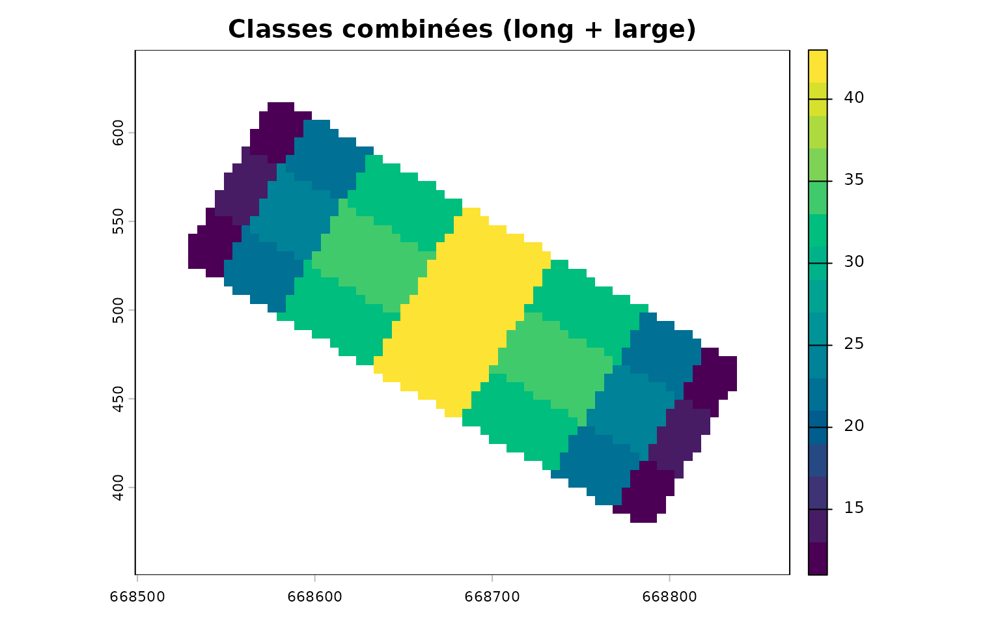
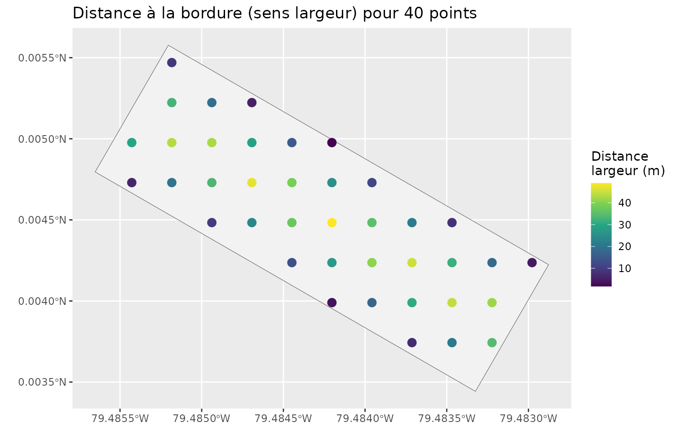

Distances aux bordures selon l'orientation du champ
Source:vignettes/distances-bordures.Rmd
distances-bordures.RmdPourquoi distinguer longueur et largeur ?
Pour une parcelle allongée, un point peut être « près du bord » dans le sens de la largeur (côté long) tout en étant loin du bord dans le sens de la longueur (extrémité). Distinguer ces deux composantes est utile pour :
- positionner des haies brise-vent sur les bons côtés ;
- modéliser les gradients de rendement de bordure ;
- identifier les zones d’ombrage et de protection.
Un champ d’exemple
On construit un rectangle de 300 m × 100 m orienté à 30°.
angle <- 30 * pi / 180
corners <- matrix(c(-150, -50, 150, -50, 150, 50, -150, 50, -150, -50),
ncol = 2, byrow = TRUE)
R <- matrix(c(cos(angle), -sin(angle), sin(angle), cos(angle)), nrow = 2)
corners <- corners %*% t(R) + 500
champ <- st_sf(id = 1, geometry = st_sfc(st_polygon(list(corners)), crs = 32618))
ggplot() +
geom_sf(data = champ, fill = "lightgreen", colour = "darkgreen") +
coord_sf() +
labs(title = "Champ d'exemple (300 m × 100 m, orienté à 30°)")
Orientation du champ
orientation <- calculer_orientation_champ(champ, methode = "mbr")
orientation[c("angle", "angle_perpendiculaire", "longueur", "largeur",
"rapport_aspect")]
#> $angle
#> [1] 120
#>
#> $angle_perpendiculaire
#> [1] 30
#>
#> $longueur
#> [1] 299.1817
#>
#> $largeur
#> [1] 99.72942
#>
#> $rapport_aspect
#> [1] 2.999934
visualiser_orientation(champ, orientation)
Distances longueur / largeur / minimale
dist <- calculer_distance_bordures_orientee(champ_poly = champ,
resolution = 5, buffer = 30)
plots <- visualiser_distances_bordures(dist, type = "comparaison")
plots$long
plots$large
plots$min
- Longueur : composante projetée sur l’axe long — faible près des extrémités.
- Largeur : composante projetée sur l’axe court — faible le long des côtés longs.
- Minimale : distance euclidienne à la bordure la plus proche.
Classer les distances
classifier_distances_bordures() découpe chaque
composante en classes (bordures, zones tampon, centre) selon des seuils
ajustables.
classes <- classifier_distances_bordures(
dist,
seuils_long = c(20, 60, 120),
seuils_large = c(10, 30, 50),
labels_long = c("extremite", "proche", "milieu", "centre"),
labels_large = c("bord", "tampon", "interieur", "centre")
)
par(mfrow = c(1, 2), mar = c(2, 2, 3, 2))
terra::plot(classes$classe_long, main = "Classes - longueur",
col = hcl.colors(4, "RdYlGn", rev = TRUE))
terra::plot(classes$classe_large, main = "Classes - largeur",
col = hcl.colors(4, "RdYlGn", rev = TRUE))
La classe combinée encode les deux dimensions en un seul code
(classe_long × 10 + classe_large), pratique pour stratifier
un échantillonnage.
terra::plot(classes$classe_combinee, main = "Classes combinées (long + large)",
col = hcl.colors(16, "Viridis"))
head(classes$table_classes)
#> classe_long classe_large code_combine label_long label_large
#> 1 1 1 11 extremite bord
#> 2 2 1 21 proche bord
#> 3 3 1 31 milieu bord
#> 4 4 1 41 centre bord
#> 5 1 2 12 extremite tampon
#> 6 2 2 22 proche tampon
#> label_combine
#> 1 extremite + bord
#> 2 proche + bord
#> 3 milieu + bord
#> 4 centre + bord
#> 5 extremite + tampon
#> 6 proche + tamponPoints d’échantillonnage
On peut aussi calculer les distances pour des points précis plutôt que sur une grille.
pts <- st_sample(champ, size = 40, type = "regular")
pts <- st_as_sf(pts)
res_pts <- calculer_distance_bordures_orientee(points_sf = pts, champ_poly = champ)
res_pts$points
#> Simple feature collection with 39 features and 3 fields
#> Geometry type: POINT
#> Dimension: XY
#> Bounding box: xmin: 370.1132 ymin: 415.0096 xmax: 643.604 ymax: 606.4531
#> Projected CRS: WGS 84 / UTM zone 18N
#> First 10 features:
#> x distance_min distance_long distance_large
#> 1 POINT (561.5568 415.0096) 7.154977 54.047163 7.154977
#> 2 POINT (588.9058 415.0096) 20.792178 30.426806 20.792178
#> 3 POINT (616.2549 415.0096) 6.806439 6.806439 34.429386
#> 4 POINT (506.8586 442.3586) 3.500926 114.925049 3.500926
#> 5 POINT (534.2077 442.3586) 17.138126 91.304719 17.138126
#> 6 POINT (561.5568 442.3586) 30.775332 67.684379 30.775332
#> 7 POINT (588.9058 442.3586) 44.064029 44.064029 44.412544
#> 8 POINT (616.2549 442.3586) 20.443667 20.443667 41.677370
#> 9 POINT (479.5095 469.7077) 13.484049 146.998178 13.484049
#> 10 POINT (506.8586 469.7077) 27.121254 128.562263 27.121254
ggplot() +
geom_sf(data = champ, fill = "grey95", colour = "grey40") +
geom_sf(data = res_pts$points, aes(colour = distance_large), size = 3) +
scale_colour_viridis_c(name = "Distance\nlargeur (m)") +
coord_sf() +
labs(title = "Distance à la bordure (sens largeur) pour 40 points")
Bonnes pratiques
- Travaillez toujours dans un CRS projeté (mètres) : les CRS géographiques faussent les distances.
- Choisissez des seuils adaptés à l’échelle du champ et à l’effet étudié (haie ≈ 10–20 × hauteur ; ombrage selon la latitude).
- Augmentez la résolution (1–2 m) pour un résultat fin, réduisez-la (5–10 m) pour explorer rapidement.
À retenir
| Fonction | Rôle |
|---|---|
calculer_orientation_champ() |
Angle et dimensions du champ (MBR ou PCA) |
calculer_distance_bordures_orientee() |
Distances longueur / largeur / minimale |
classifier_distances_bordures() |
Classes de distance |
visualiser_*() |
Cartes prêtes à l’emploi |